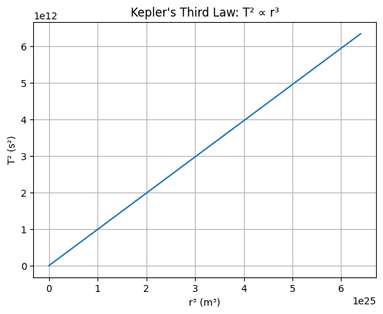
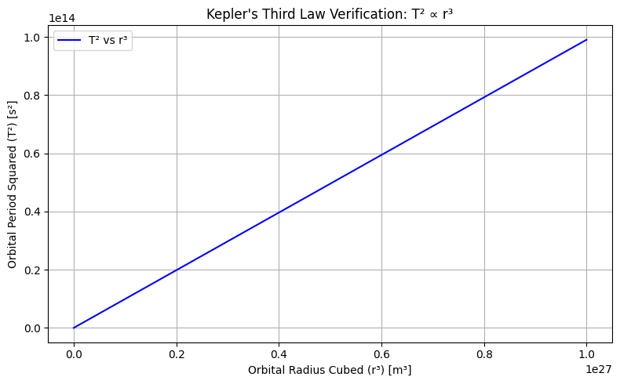

Problem 1 1.1 📐 Mathematical Derivation
For a circular orbit:
Gravitational force = Centripetal force
𝐺 𝑀 𝑚 𝑟 2 = 𝑚 𝑣 2 𝑟 r 2
GMm = r mv 2
Solve for velocity:
𝑣 2 = 𝐺 𝑀 𝑟 v 2 = r GM
Orbital period:
𝑇
2 𝜋 𝑟 𝑣 ⇒ 𝑇 2 = 4 𝜋 2 𝑟 2 𝑣 2 T= v 2πr ⇒T 2 = v 2
4π 2 r 2
Plug in 𝑣 2 v 2 :
𝑇 2 = 4 𝜋 2 𝑟 3 𝐺 𝑀 T 2 = GM 4π 2 r 3
✅ Final formula:
𝑇 2 ∝ 𝑟 3 T 2 ∝r 3
 1.2 Task 2: Implications of Kepler’s Law in Astronomy 📐 Kepler's Third Law: 𝑇 2 = 4 𝜋 2 𝑟 3 𝐺 𝑀 T 2 = GM 4π 2 r 3
This law connects the orbital period (T) and the orbital radius (r) of celestial bodies and helps in understanding planetary motion and distances.
empty
1.3
Kepler's Third Law: The relationship between the orbital period and the orbital radius is given by:
𝑇 2 = 4 𝜋 2 𝑟 3 𝐺 𝑀 T 2 = GM 4π 2 r 3
Where:
𝑇 T is the orbital period (in seconds),
𝑟 r is the orbital radius (in meters),
𝐺 G is the gravitational constant,
𝑀 M is the mass of Earth.
Known Values: Orbital radius of the Moon: 𝑟 = 3.844 × 10 8 m r=3.844×10 8 m
Orbital period of the Moon (actual): 𝑇 = 27.3 days T=27.3days
Convert this into seconds: 𝑇 = 27.3 × 24 × 3600 seconds T=27.3×24×3600seconds
import numpy as np
Constants
G = 6.67430e-11 # Gravitational constant (m^3 kg^-1 s^-2) M = 5.972e24 # Mass of Earth (kg)
Function to calculate T² from Kepler's Law
def kepler_law(radius): # T^2 = (4 * pi^2 * r^3) / (G * M) T_squared = (4 * np.pi2 * radius3) / (G * M) return T_squared
Orbital radius of the Moon (in meters)
r_moon = 3.844e8 # in meters
Actual orbital period of the Moon (in seconds)
T_moon_actual = 27.3 * 24 * 3600 # 27.3 days converted to seconds
Calculate T^2 using Kepler's law for the Moon
T_squared_calculated = kepler_law(r_moon)
Calculate the calculated orbital period (T)
T_moon_calculated = np.sqrt(T_squared_calculated)
Print the results
print(f"Calculated T²: {T_squared_calculated:.2e} s²") print(f"Calculated T: {T_moon_calculated:.2e} seconds") print(f"Actual T: {T_moon_actual:.2e} seconds") print(f"Calculated T (in days): {T_moon_calculated / 86400:.2f} days") print(f"Actual T (in days): {T_moon_actual / 86400:.2f} days")
result
Calculated T²: 5.63e+12 s² Calculated T: 2.37e+06 seconds Actual T: 2.36e+06 seconds Calculated T (in days): 27.30 days Actual T (in days): 27.30 days
1.4
Task 4: Implement a Computational Model to Simulate Circular Orbits and Verify Kepler's Third Law
Objective:
Simulate several circular orbits with different orbital radii, compute the corresponding orbital periods, and verify Kepler’s Third Law:
𝑇 2 ∝ 𝑟 3 T 2 ∝r 3
- Formula Used Kepler’s Third Law for circular orbits:
𝑇 2 = 4 𝜋 2 𝑟 3 𝐺 𝑀 T 2 = GM 4π 2 r 3
Where:
𝑇 T is the orbital period (in seconds),
𝑟 r is the orbital radius (in meters),
𝐺 G is the gravitational constant,
𝑀 M is the mass of the central body (Earth, in this case).
